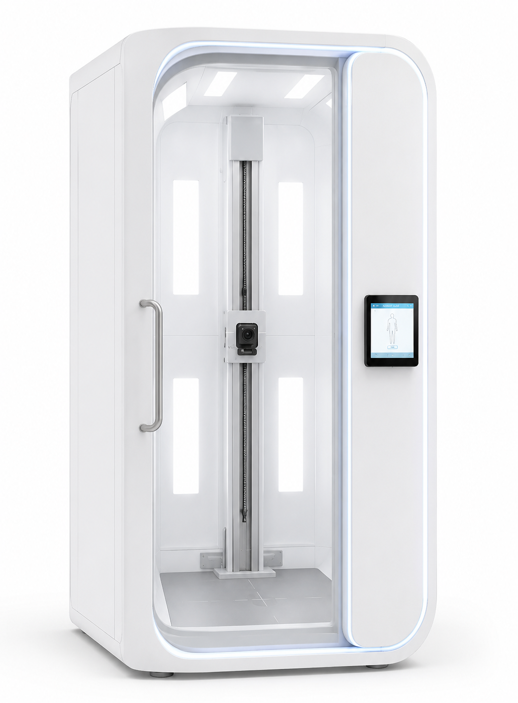

Scan corps entier
Capture automatisée de la surface cutanée. Le système gère seul le positionnement et l'imagerie : aucun opérateur requis.
Krancos développe une cabine d'imagerie en libre-service destinée aux pharmacies : le patient entre, la cabine scanne sa peau, l'IA analyse les lésions. Sans rendez-vous, en quelques minutes.
Dispositif en cours de développement, non encore marqué CE. Les caractéristiques décrites correspondent à la solution en construction.

Le cancer de la peau est l'un des cancers dont l'incidence progresse le plus vite. Pris tôt, un mélanome se soigne dans la très grande majorité des cas. Pris tard, le pronostic s'effondre. Entre les deux : le délai d'accès à un dermatologue.
En hausse
L'incidence des cancers cutanés augmente régulièrement en France depuis plusieurs décennies, mélanome en tête.
Plusieurs mois
Le délai moyen pour obtenir un rendez-vous chez un dermatologue dépasse fréquemment plusieurs mois, et bien davantage dans les zones sous-dotées.
Décisif
Détecté à un stade précoce et localisé, le mélanome affiche un taux de survie à 5 ans très élevé ; l'écart avec les stades avancés est considérable.
Une cabine compacte, conçue pour s'intégrer à l'espace de la pharmacie, réaliser un examen cutané complet sans intervention manuelle et restituer un rapport lisible au patient comme au pharmacien.
Capture automatisée de la surface cutanée. Le système gère seul le positionnement et l'imagerie : aucun opérateur requis.
Reconstruction haute résolution du corps, avec identification unique et suivi individuel de chaque lésion d'une visite à l'autre.
Un éclairage double mode, polarisé et non polarisé, qui révèle les structures situées sous la surface de la peau.
Le moteur de deep learning détecte, classe et évalue le niveau de risque de chaque lésion, puis priorise ce qui mérite un avis médical.
Le parcours prévu, de l'entrée dans la cabine jusqu'à l'orientation vers un dermatologue si nécessaire.
Directement à la pharmacie, sans rendez-vous. Une vidéo et des schémas de positionnement sur tablette guident chaque étape.
Imagerie macro haute résolution de la surface cutanée, en éclairage polarisé et non polarisé, pour révéler les structures sous-cutanées.
Chaque lésion détectée reçoit un score de risque fondé sur sa morphologie, son asymétrie, ses bords, sa couleur et son diamètre.
Le patient reçoit son rapport annoté. Si une lésion est signalée, une consultation dermatologique est recommandée, et le pharmacien aide à l'orientation.
Notre chaîne de vision par ordinateur détecte les lésions, les classe, les compare aux motifs dermoscopiques connus et signale les anomalies. Le résultat est un outil d'orientation destiné à être lu avec un professionnel de santé, jamais un substitut à l'examen d'un médecin.
Derma Cabin : aperçu technique
Nous recrutons les premières officines pilotes. La cabine est conçue pour s'intégrer sans réorganiser votre activité : Krancos prendra en charge l'installation, la formation et la maintenance.
Un motif de visite inédit, qui attire une patientèle nouvelle et fidélise celle qui vous fait déjà confiance.
Peu d'officines proposent un dépistage cutané assisté par IA. C'est un service qui vous démarque durablement.
Vous renforcez votre rôle d'acteur de prévention de proximité, au plus près des patients.
Une cabine compacte, qui sera installée et maintenue par nos équipes. Vous n'aurez rien à gérer techniquement.
Le scan est entièrement piloté par l'IA. Une courte formation suffit à votre équipe pour accompagner et orienter.
Des rapports clairs et priorisés, pensés pour transmettre l'information utile au dermatologue.
Dites-nous où vous exercez et nous vous recontactons pour échanger sur le programme pilote, les conditions d'installation envisagées et le calendrier de déploiement dans votre région.
kiyan@krancos.frIndiquez votre pharmacie et votre ville dans le message. N'y faites figurer aucune donnée de santé.
Pharmacien, patient, partenaire ou investisseur : parlons de ce que Krancos pourra changer près de chez vous.